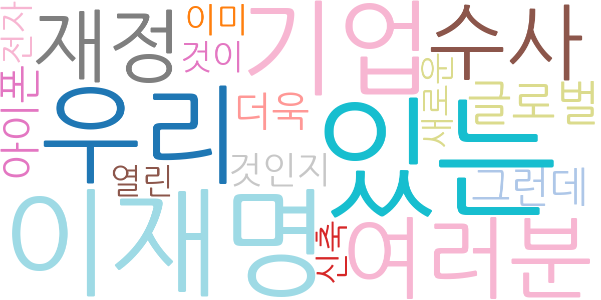
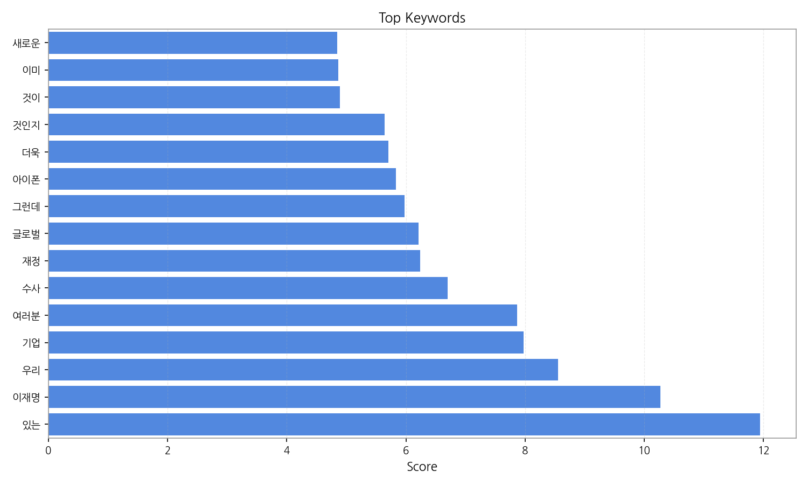
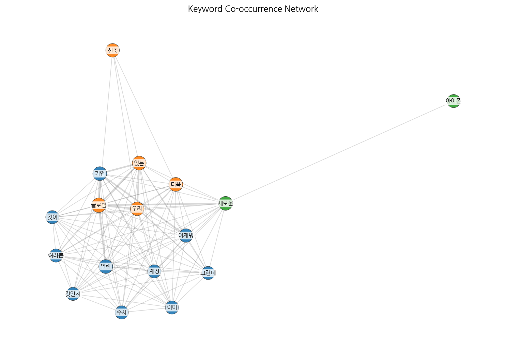
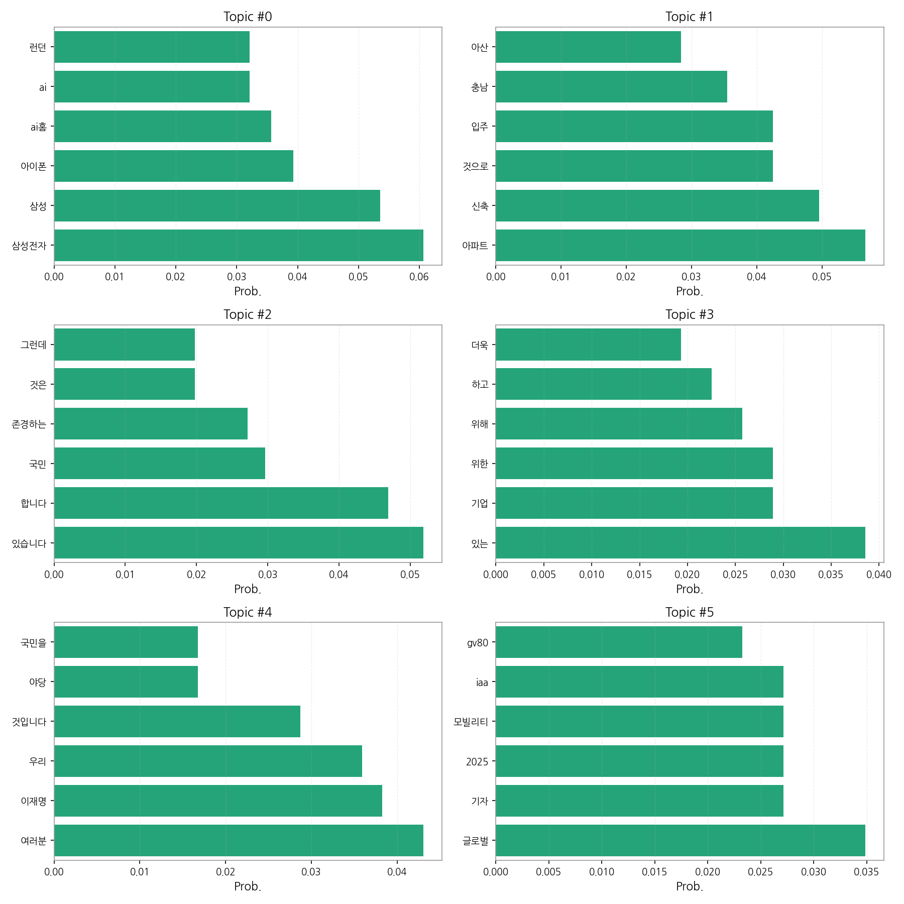
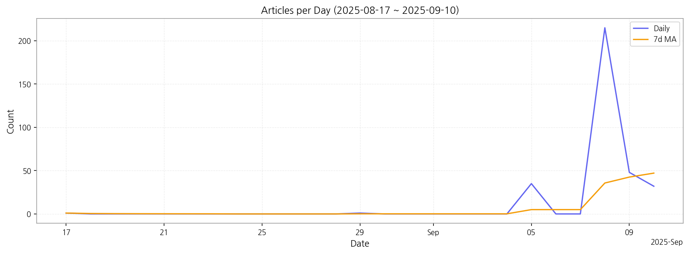

이번 기간 핵심 토픽과 키워드, 주요 시사점을 요약합니다.
핵심 맥락 설명: 데이터는 삼성전자의 신제품 출시 및 AI 관련 기술, 부동산 시장 특히 아파트 신축 및 입주 관련 뉴스, 그리고 정치 뉴스(이재명, 야당 관련)와 일반적인 사회 뉴스(국민, 기업 관련)를 주요 토픽으로 다루고 있습니다. 이는 한국 사회의 주요 관심사인 기술, 부동산, 정치를 반영하며, 각 토픽의 키워드 분석을 통해 세부적인 이슈들을 파악할 수 있습니다. 특히 삼성전자와 관련된 AI 기술 및 신제품 출시에 대한 관심이 높은 것을 확인할 수 있습니다.
최근 변화/스파이크: 2025년 9월 5일부터 9월 8일 사이에 기사 수가 급증하는 스파이크 현상이 나타났습니다. 이는 특정 뉴스 사건이나 이벤트에 의해 언론의 집중적인 보도가 이루어졌음을 시사하며, 해당 기간의 주요 뉴스를 분석하여 원인을 파악해야 합니다.
실무 인사이트:
9월 5일~8일 기사 분석: 기사 수 급증 원인을 분석하여 당시 주요 뉴스 이벤트를 파악하고, 향후 유사 이벤트 발생 시 대응 전략을 수립합니다. 이는 특정 이슈에 대한 신속한 대응 및 위기 관리에 필수적입니다.

| Rank | Keyword | Score |
|---|---|---|
| 1 | 있는 | 11.945 |
| 2 | 이재명 | 10.273 |
| 3 | 우리 | 8.550 |
| 4 | 기업 | 7.974 |
| 5 | 여러분 | 7.863 |
| 6 | 수사 | 6.701 |
| 7 | 재정 | 6.233 |
| 8 | 글로벌 | 6.208 |
| 9 | 그런데 | 5.975 |
| 10 | 아이폰 | 5.831 |
| 11 | 더욱 | 5.700 |
| 12 | 것인지 | 5.642 |
| 13 | 것이 | 4.890 |
| 14 | 이미 | 4.861 |
| 15 | 새로운 | 4.842 |




핵심 맥락 설명: 데이터는 삼성전자의 신제품 출시 및 AI 관련 기술, 부동산 시장 특히 아파트 신축 및 입주 관련 뉴스, 그리고 정치 뉴스(이재명, 야당 관련)와 일반적인 사회 뉴스(국민, 기업 관련)를 주요 토픽으로 다루고 있습니다. 이는 한국 사회의 주요 관심사인 기술, 부동산, 정치를 반영하며, 각 토픽의 키워드 분석을 통해 세부적인 이슈들을 파악할 수 있습니다. 특히 삼성전자와 관련된 AI 기술 및 신제품 출시에 대한 관심이 높은 것을 확인할 수 있습니다.
최근 변화/스파이크: 2025년 9월 5일부터 9월 8일 사이에 기사 수가 급증하는 스파이크 현상이 나타났습니다. 이는 특정 뉴스 사건이나 이벤트에 의해 언론의 집중적인 보도가 이루어졌음을 시사하며, 해당 기간의 주요 뉴스를 분석하여 원인을 파악해야 합니다.
실무 인사이트:
9월 5일~8일 기사 분석: 기사 수 급증 원인을 분석하여 당시 주요 뉴스 이벤트를 파악하고, 향후 유사 이벤트 발생 시 대응 전략을 수립합니다. 이는 특정 이슈에 대한 신속한 대응 및 위기 관리에 필수적입니다.
| Idea | Target | Value Prop | Score |
|---|---|---|---|
| AI 기반 뉴스 분석 및 예측 플랫폼 | 대기업 홍보팀, 정치 컨설팅 업체, 투자 분석가, 금융기관 리서치팀 (직원 수 100명 이상) | AI 기반 실시간 뉴스 분석 및 예측 플랫폼을 통해, 주요 키워드 및 이슈를 실시간으로 추적하고, 향후 시장 변화를 예측하여 신속한 의사결정을 지원합니다. 경쟁사 모니터링 및 위기 관리에도 효과적입니다. 기존 수동 분석 대비 속도와 정확성을 크게 향상시킵니다. | 4.50 |
| 삼성전자 신제품 출시 예측 서비스 | IT 업계 분석가, 투자자, 삼성전자 협력업체 (중소기업 포함) | AI 기반 삼성전자 신제품 출시 예측 서비스를 통해, 출시 시기, 제품 사양, 시장 반응 등을 예측하여 사업 전략 수립 및 투자 결정에 도움을 줍니다. 경쟁사 제품과의 비교 분석을 통해 시장 경쟁력을 강화하는 데 기여합니다. | 4.20 |
| 부동산 시장 예측 서비스 | 부동산 투자자, 건설사, 부동산 개발업체 (개인 및 중소규모 포함) | AI 기반 부동산 시장 분석 및 예측 서비스를 통해, 아파트 신축 및 입주 정보, 시장 동향, 정부 정책 등을 종합적으로 분석하여 투자 가치를 예측합니다. 개인 투자자부터 대형 개발업체까지 다양한 고객에게 맞춤형 정보를 제공합니다. | 4.00 |
| 한국 사회 이슈 통합 분석 플랫폼 | 정부기관, 연구소, 시장조사업체 (대기업) | 기술, 부동산, 정치 등 한국 사회 주요 이슈를 통합적으로 분석하고, 이슈 간의 상호 작용을 시각화하여 사회 변화를 예측하는 플랫폼입니다. 정책 결정 및 사회 문제 해결에 필요한 통찰력을 제공합니다. | 3.80 |
| 정치 뉴스 분석 및 위험 관리 서비스 | 대기업 법무팀, 정치 위험 관리 부서, 투자은행 (대기업) | 정치 뉴스를 실시간으로 분석하고, 잠재적인 위험 요소를 사전에 감지하여 기업의 정치적 리스크를 최소화합니다. 정치적 이슈에 대한 신속한 대응 전략 수립을 지원하며, 투자 결정에 필요한 정보를 제공합니다. | 3.50 |